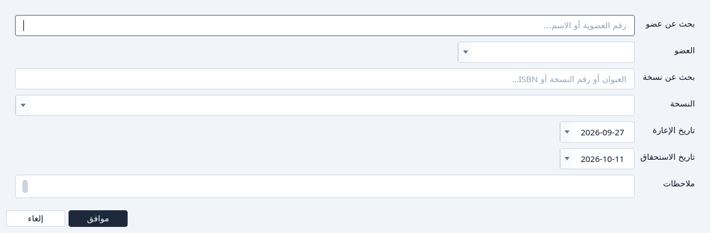
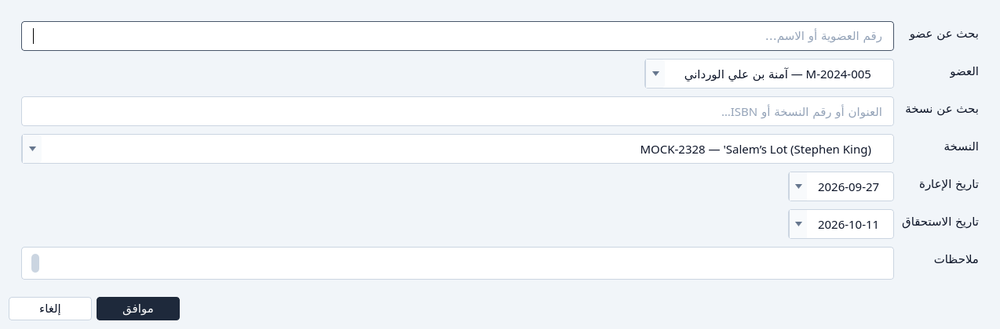
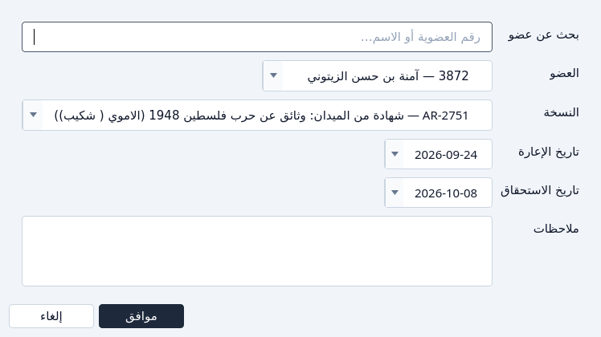
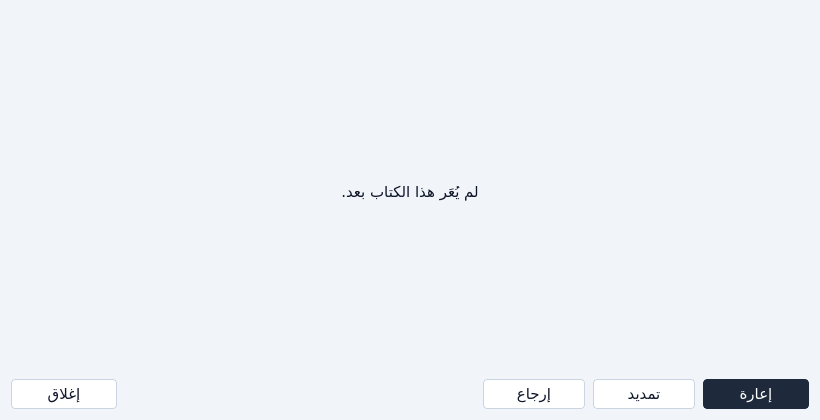
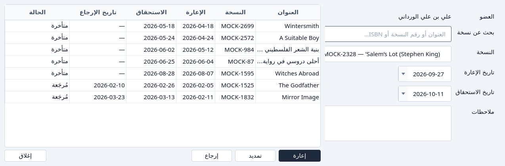

إعارة كتاب
إخراج نسخة من الإعارة، أو من عنوان، أو من عضو.
لا يُعرض إلا عضو نشط، وإلا نسخة على الرف. يوم الاستحقاق يبدأ بعد 14 يوماً من يوم خروج النسخة. يمكن تغييره قبل موافق. انظر حالة العضو وحالات الإعارة.
من الإعارة
اضغط إعارة.
النافذة تطلب عضواً ونسخة. ابحث في أي القائمتين إذا طالت.

الإعارة، قبل اختيار عضو ونسخة. اختر العضو والنسخة، ثم موافق.

عضو ونسخة مختارين. إلغاء يترك الإعارة كما هي.


من إعارات كتاب
في الفهرس، ظلّل العنوان واضغط الإعارات. إعارة موجودة حتى إذا لم يُستعر العنوان قط. قائمة النسخ هي نسخ ذلك العنوان وحده، ولا بحث عن نسخة.
اضغط إعارة في نافذة الإعارات.

إعارة من عنوان. قائمة النسخ هي ذلك العنوان وحده.



اختر العضو، أكّد النسخة، واضغط موافق. إغلاق يغادر السجل.
من إعارات عضو
في الأعضاء، ظلّل العضو واضغط الإعارات ثم إعارة. العضو يظهر اسماً، لا بحثاً. أنت تختار النسخة.


إذا تعذّر
- لا نسخة من ذلك العنوان على الرف. قائمة النسخ تقول ذلك، وموافق يبقى غير متاح.
- العضو غير نشط. ليس في قائمة الأعضاء. جدّده أولاً. انظر تسجيل عضو.
- يوم الاستحقاق قبل يوم خروج النسخة. النافذة ترفضه.